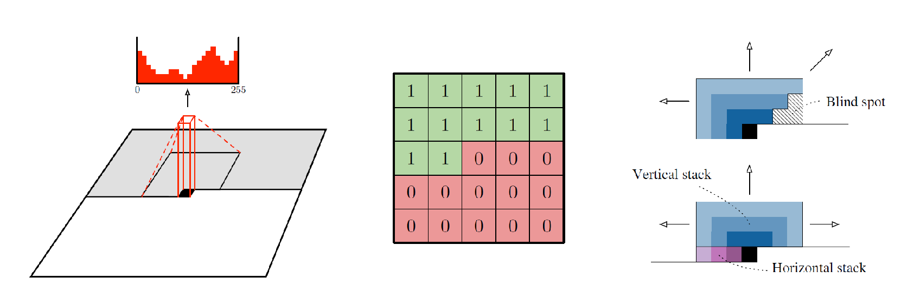

Review: generative models
- Main dichotomy:
- Models that can compute explicit $p(\vx)$ -- exact or approximate; sometimes called "likelihoodA bit of a misnomer: the likelihood function is a parametric model for density (or probability distribution) $p(\vx;\btheta)$ taken as a function of $\btheta$; it measures how well the model explain the data. With generative models we usually are interested in how well a particular data sample is explained by the model. model"
- Models that do not compute $p(\vx)$ but allow sampling from $p(\vx)$
- Another axis:
- Exact: sampling from the exact $p(\vx)$ under the model
- Approximate: sampling from an approximation of $p(\vx)$
- In both cases, model's $p(\vx)$ is not the "real" data distribution, if such a thing even exists
- Another use of generative models: to help discrimination. Bayes rule: \[p(\vx,\vy)\,=\,p(\vx)\pc{\vy}{\vx}\,=\,p(\vy)\pc{\vx}{\vy} \class{rj-hide-0-4}{ \quad\Rightarrow\quad \pc{\vy}{\vx}\,=\,\frac{\pc{\vx}{\vy}p(\vy)}{ \class{rj-blur-5-}{ p(\vx) } } } \class{rj-hide-0-5}{\,\propto\, \pc{\vx}{\vy}p(\vy)} \]
- So if we have the conditional generative model for which we can estimate likelihood, we can invert it to give us a discriminator
VAEs as generators
- A significant achievement at the time: 2017
Conditional VAE
- Key requirements for most practical uses of generative models: controllable generation
- In a VAE, both encoder and decoder become conditioned on $\vy$
- Simplest example: category level control (generate image of type $y$)


Autoregressive models for images
- We can impose an orderActually each pixel is a vector of ( R G B) colors, so we need to also impose order there: \[p(RGB|\cdot)\,=\,p(\textcolor{red}{R}|\cdot)p(\textcolor{green}{G}|\textcolor{red}{R},\cdot)p(\textcolor{blue}{B}|\textcolor{red}{R},\textcolor{green}{G},\cdot)\] on the pixels (e.g., raster) and set up \[p(\vx)\,=\,\sum_{i,j}\pc{x_{i,j}}{\{x_{\le i,\lt j}\}} \]
- Lots of efforts in 2000s with random fields
- Early (modern) attempts used LSTM
- PixelCNN: use convolutions, with cleverly constructed masking
- To make the receptive field larger, make the convnet deep, and use gates (similar to LSTM)

Review: vector quantization
- Vector quantization (VQ): given a set of vectors $\mathcal{M}\,=\,\left\{\bmu_1,\ldots,\bmu_k\right\}$ in $\mathbb{R}^d$ (a codebook with $k$ codewords), any $\vx\in\mathbb{R}^d$ is assigned the index of the closest codeword, \[c^\ast(\vx)\,=\,\argmin{c} \eucnorm{\bmu_c-\vx}^2\]
-
Often the codebook is the output of $k$-means clusteringThe objective of $k$-means is to find a set of of codewords that minimize VQ (Euclidean Note that a different metric minimized by assignments will lead to a different algorithm and a different VQ solution) reconstruction error:
\[(\bmu^\ast_1,\ldots,\bmu^\ast_k)\,=\,
\argmin{\bmu_1,\ldots,\bmu_k}\sum_i\eucnorm{\vx_i-\bmu_{c^\ast(\vx)}}^2
\]
It is (approximately) solved by the famous iterative Lloyd algorithm: guess initial $\bmu$s, then repeat until convergence:
- Compute $c^\ast(\vx_i)$ based on current $\bmu$s;
- For each $c$, recompute $\bmu_c$ as the mean of $\vx$s assigned to it
- Usually treated as a (discovered) structure in the data, but can also be used simply as means of (a) compression and (b) replacing continuous vector data with discrete integer indices
- Suppose we have an embedding matrix for the codewords, i.e., $\bmu_c\in\mathbb{R}^d\,\to\,\mathbf{e}^c\in\mathbb{R}^\dmodel$. This is now like a tokenizer with an embedding layer.
- Given some input $\vx$ we map it to a codeworkd $c=c^\ast(\vx)$, and then to $\mathbf{e}^c$. When we compute some (downstream) loss which is a function of $\ve^c$, we can backpropagate it to the codebook (although not to the assignments, which are discrete)
VQVAE
VQVAE-2
VQVAE
VQVAE-2
Digression: super-resolution
- A long standing problem in computer vision: image enhancement: removing noise, removing blur, and increasing resolution, a.k.a. super-resolution
- An ill-posed problem: infinitely manysolutions in high res explaining low res equally well

- ML is promising because it can learn to infer more likely high res images!
GAN: intuition
- VAEs model the data distribution, by modeling the prior $q(\vz)$ and the decoder
- We learn this by training an encoder as well, which we then discard
- What if we just learn a decoder $\mathcal{N}(\mathbf{0},\mathbf{1})\to p(\vx)$?
We would need to tell whether a particular $\widehat{\vx}=E(\vz)$ is good under $p(\vx)$ Not clear how to do that, since we wouldn't know which training $\vx_i$ a randomly sampled $\vz$ corresponds to -- so can't learn by training to reconstruct! - It may be easier to tell whether a particular $\vx$ is good or not than to explicitly model $p(\vx)$
- Set up a "two player game" with a generator $\textcolor{blue}{G}$ and a discriminator $\textcolor{red}{D}$
- $\textcolor{blue}{G}$ takes $\vz\sim\mathcal{N}(\mathbf{0},\mathbf{1})$ and maps it to a $\vx$ (it's the "decoder")
- $\textcolor{red}{D}$ tries to tell whether an example $\vx$ came from real data or from $\textcolor{blue}{G}$
- $\textcolor{blue}{G}$ tries to fool $\textcolor{red}{D}$; $\textcolor{red}{D}$ tries not to be fooled
- We will set it up as loss we can backprop from
GAN objective and training
\[ \min_{\textcolor{blue}{\btheta_G}} \max_{\textcolor{red}{\btheta_D}} \left\{\; \Ep{\vx\sim p_{\mathrm{data}}} {\log \textcolor{red}{D}\left(\vx;\,\textcolor{red}{\btheta_D}\right)} \,-\, \Ep{\vz\sim p(\vz)} {\log \textcolor{red}{D}\left(\textcolor{blue}{G}\left(\vz;\,\textcolor{blue}{\btheta_G}\right);\,\textcolor{red}{\btheta_D}\right)} \;\right\} \]- A minimax objective; training alternates between gradient steps on $\textcolor{blue}{\btheta_G}$ and $\textcolor{red}{\btheta_D}$
- Sample a batch of $\vz$ samples and generate images using the current $\textcolor{blue}{G}$;
add a batch of real images;
update $\textcolor{red}{\btheta_D}$ to increase the score of the real ones and decrease the score of the generated ones - Sample a batch of $\vz$ samples and generate images;
update $\textcolor{blue}{\btheta_G}$ to increase the score of the generated images under the current $\textcolor{red}{D}$
- GANs have a reputation of being difficult to train (unstable)
- Lots of lore about training them, and lots of tricks that have been proposed over the years
Evolution of GANs
- First GAN results: 2014 (the original GAN paper)
- Each yellow box (right columns): the nearest training set neighbor of the sample next to it
CIFAR-10
Toronto Face Database
- Steady progress into 2020 (and arguably beyond)
DCGAN, 2016
Progressive GAN, 2018
BIGGAN, 2019
Convolutional GANs

- Generator: the random $\vz\in\mathbb{R}^{100}$ is projected to $\mathbb{R}^{16,384}$; the projection is reshaped to a $\mathbb{R}^{4\times4\times1024}$ to "jump-start" the convolutional stack
- Discriminator: the last conv layer of the network is flattened (into a vector), fed to a fully connected layer with a single sigmoid output
- Better results; more importantly, improved training stability
Faces (350k Internet images)
ImageNet
Progressive GANs
- Main innovation: gradually "grow" the GAN along with the resolution of images it generates
- First convincing high-resolution face results
- Decent results in various other categories (bikes, some animals, furniture)
- A separate GAN trained on each category (typically on 100k-200k examples)
LSUN categories, 256pix
Faces (new high quality dataset), 1024pix
BigGAN
- "Despite recent progress in generative image modeling, successfully generating high-resolution, diverse samples from complex datasets such as ImageNet remains an elusive goal. To this end, we train Generative Adversarial Networks at the largest scale yet attempted, and study the instabilities specific to such scale."
- Uses conditioning by appending class information to $\vz$ (and injecting it into classifier and discriminator
- Some bells and whistles, including partitioning the latent space, using "non-local" (learned) attention layers, etc.
- Results on some categories better than others
Conditional GANs
- Generator: the class label is embedded into a vector, which is concatenated or added (element-wise) to the latent input $\vz$
- Discriminator: the class label embedding is added (concat or sum) at the end, once the hidden layer output is flattened (note: it could also be replicated into a tensor and added to a conv layer output!)
- The output of the discriminator is still a single sigmoid score for "real/fake" for the given class
- Obvious question: what if we want more complex conditioning/control?
- More than a single object in the image, with a specified layout?
- Articulation/pose for people or animals?
- Properties besides category label, e.g., season, lighting, etc.?
Evaluating generated images: FID score
- Ideally, you have a downstream task which you use the generated images for, and can evaluate how different generative models affect the end results.
- Most common standalone metric: Frechet Inception Distance, or FID [score]
- Incepttion-V3: a particular network from Google ca. 2016, trained on ImageNet (1000 categories, 1.3M images)
- Frechet distance (equivalent to Earth Mover's distance) between $\mathcal{N}(\bmu_r,\bSigma_r)$ and $\mathcal{N}(\bmu_g,\bSigma_g)$: \[\mathrm{FID}(\bmu_r,\bSigma_r,\bmu_g,\bSigma_g)\,=\,\eucnorm{\bmu_r-\bmu_g} \,+\, \operatorname{Tr}\left( \bSigma_r+\bSigma_g-2(\bSigma_r\bSigma_g)^{\tfrac{1}{2}} \right) \]
Evaluating generated images: LPIPS
- Learned Perceptual Image Patch Similarity (LPIPS): trained to match human judgments of patch similarity
- Relies on features extracted by pretrained networks (the most common variant uses AlexNet), with tuned linear weights
ViTVQGAN

Modern autoregressive image models
TiTok embeddings
- Introduce 32 special tokens that serve as decoding bottleneck
Diffusion models: denoising intuition
- Recall denoising autoencoders: the latent captures the "essence of the image" without the noise (so we can reconstruct)
- Now let's consider a gradual corruption process: add a bit of noise at a time
- Let $\vx_0$ be the (clean) image; sample $\bepsilon\sim\mathcal{N}(\mathbf{0},\mathbf{1})$ \[\vx_t\,=\,\class{rj-strike-1-}{\style{--strike-angle:-8deg;--strike-thickness:12px;}{\vx_0+\sigma_t\bepsilon}} \class{rj-hide-0}{ \sqrt{\quad\alpha_t}\vx_0\,+\,\sqrt{1-\alpha_t}\bepsilon } \] where $\alpha_t$ are chosen so the variance is preserved through the forward pass $\sigma_1,\ldots,\sigma_T$
- By the time we get to $T$th step, it's basically just the noise
- Goal: train a neural network to reverse this process
- Network architecture: U-Net! (recall other image-to-image applications). How do we train it?
Training diffusion models
- Forward process: $\bepsilon\sim\mathcal{N}(\mathbf{0},\mathbf{1})$, $\vx_t\,=\,\sqrt{\quad\alpha_t}\vx_0\,+\,\sqrt{1-\alpha_t}\bepsilon$
- Basic reverse diffusion loss: train a network $\epsilon_\btheta$ that given noisy $\vx_t$ and the known What you really need is known $\sigma_t$ but usually we have a fixed schedule of $\sigma$s spanning [0,1], so $t$ is sufficient to look up the right $\sigma_t$ noise level $t$, predicts $\bepsilon$ \[\min_\btheta\Ep{t\sim[T],\vx_0\sim p_{\mathrm{data}},\bepsilon\sim\mathcal{N}(\mathbf{0},\mathbf{1})}{\eucnorm{\bepsilon\,-\,\epsilon_\btheta\left(\vx_0,t\right)}^2} \]
- To sample from the expectation: pick the next training image $\vx_0$, draw $\bepsilon$ from the standard Gaussian (per pixel), pick random $t\in[T]$, perturb the noise with the right $\alpha_t$, and try to recover Earlier approaches had the objective of recovering the clean $\vx_0$ but today the common way is to predict $\bepsilon$ $\bepsilon$ from The time step $t$ is encoded into a vector (recall positional encoding) to make conditioning in the network easier. $\vx_t$, $t$
Sampling from diffusion models
- Recall: the model has seen $\vx_T$ which are indistinguishable from random noise
- DDPM (Denoising Diffusion Probabilistic Model) sampling: Start with $\vx_T$ (truly random); estimate $\bepsilon$ from $\vx_T$, $t$
- Use the estimated $\bepsilon$ to "denoise" a bit to $\vx_{T-1}$
- Continue until $\vx_0$ is obtained after $T$ steps
- Typically, to get good results $T=1000$; this is pretty expensive!
- DDIM (Denoising Diffusion Implicit Models): same training, sampling can be done Main idea in DDIM: make the diffusion process non-Markovian
DDPM (Markovian) DDIM (non-Markovian) DDIM accelerated samplingwith 30-50 steps to match the DDPM 1000-step quality
- Each step is pretty costly: run an image-size input through a network to get an image-size output.
Diffusion sampling: intuition
- The higher $t$ (noise level) the wider the possibilities of what the image might be
- Multiple "phases" (although without clear boundaries): very high $t$ = (almost) anything possible; medium $t$ = maybe clear where it's going but need to determine many details; low $t$ = traditional denoising (refine high frequency details)
Diffusion models as latent space models
Diffusion models as score matching
- Recall: the score of the density $p(\vx;\btheta)$ is $\nabla_{\textcolor{red}{\vx}}p(\vx;\btheta)$
- The score tells us where to go to increase $p(\vx)$
- To deal with inaccurate score estimates, we can add noise to $p(\vx)$; more variance = more smoothing = less low-density

 Mixture of 2 Gaussians
Langevin dynamics
A pitfall: low density regions
Mixture of 2 Gaussians
Langevin dynamics
A pitfall: low density regions

- Jointly estimate $\nabla_{\vx}p(\vx+\sigma_t\bepsilon)$ for all $\sigma_t$
Diffusion models as SDE solvers
- If we pretend that $t$ is continuous, we have a (stochastic) differential equation describing the trajectory of forward (and a corresponding one, of the backward) process in diffusion noise perturbation
- The reverse SDE involves the (estimated) score to compute the trajectory


- An even simpler interpretation: the diffusion sampling process is a gradient descent on $p(\vx)$ where $\epsilon_\btheta(\vx_t,t)$ has learned to estimate the gradient (score)
Conditioning: classifier guidance
- If we want to sample $\vx|y$ (e.g., category), can train per-class model
- If we want a single model: use classifier guidance. Train a classifier estimating $\pc{y}{\class{rj-alert-1}{\vx_t\class{rj-blur-2-}{,t}}}$ Recall Bayes rule: $\pc{\vx_t}{y}\propto \pc{y}{\vx_t}p(\vx_t)$; \[\begin{align} \textcolor{Tan}{\log \pc{\vx_t}{y}}\quad&=&\quad \textcolor{blue}{\log \pc{y}{\vx_t}}\quad&+&\quad \textcolor{magenta}{\log p(\vx_t)}\,&+\,\mathrm{const}\\ \class{rj-hide-0-1}{ \textcolor{Tan}{\nabla_{\vx_t}\log\pc{\vx_t}{y}} } &\, \class{rj-hide-0-1}{ = } &\, \class{rj-hide-0-1}{ \textcolor{blue}{\nabla_{\vx_t}\log \pc{y}{\vx_t}} } &\, \class{rj-hide-0-1}{ + } &\, \class{rj-hide-0-1}{ \textcolor{magenta}{\nabla_{\vx_t}\log p(\vx_t)} } & \end{align} \] $\textcolor{Tan}{\nabla_{\vx_t}\log\pc{\vx_t}{y}}$: conditional score function (the step we want)
- To sample from category $y$: move the sample in the direction $\textcolor{magenta}{\nabla_{\vx_t}\log p(\vx_t)}\,+\,w\cdot\textcolor{blue}{\nabla_{\vx_t}\log \pc{y}{\vx_t}}$,
where $w$ is the classifier guidance weight
$\textcolor{blue}{\nabla_{\vx_t}\log \pc{y}{\vx_t}}$: guidance obtained from the classifier
$\textcolor{magenta}{\nabla_{\vx_t}\log p(\vx_t)}$: the original (pre-trained) score of the (unconditional) diffusion model
 $w$=1.0
$w$=10.0
$w$=1.0
$w$=10.0
Classifier-free guidance
- A much more common approach today: skip the classifier; train the condiional and unconditional models jointly
- More precisely: train one model that can sample from both $\pc{\vx}{\vy}$ and $p(\vx)$
- Modify the model to accept conditioning
- During training, with some probability, drop the conditioning (replace with "null", $\vy=\varnothing$)
- Sampling: compute both \[ \textcolor{blue}{\vs^\vy}\,=\,\epsilon_\btheta\left(\vx,\vy\right)\qquad\text{and}\qquad \textcolor{magenta}{\vs^\varnothing}\,=\,\epsilon_\btheta\left(\vx,\varnothing\right) \]
- Make the step \[(1+w)\cdot\textcolor{blue}{\vs^\vy}\,-\,w\cdot\textcolor{magenta}{\vs^\varnothing}\] i.e., steer from $p(\vx)$ towards $\pc{\vx}{\vy}$
Classifier-free guidance and text
- Initially, $y$ was a category
- Today, $\vy$ can be class, text, layout map, edge map, etc.; as long as have a way to inject conditioning into $\epsilon_\btheta$, can train with mixed conditioning and use CFG for sampling
- A still relevant form of classifier guidance: CLIP guidance (note: must fine-tune CLIP on noisy $\vx_t$s)
- Note: using CFG double the cost of each sampling step
- High $w$ often leads to over-saturated images. In practice, often need to clip the pixel range through sampling process
Latent space diffusion
- Latent Diffusion Models (LDM): do the diffusion in a (lower-dim) latent space, then decode into the RGB image when done
- How do we get the latent space and the decoder? Train an autoencoder!
- The U-Net now operates on the (much smaller) $\vz$s and not image-sized $\vx$; the entire diffusion model is trained on $\vz$
Stable diffusion
- Probably the most widely used (open source) diffusion model (LDM) Accepts a variety of conditioning modes (embedded by mode-specific methods)
- Text: usually converted to tokens using a pre-trained model (BERT, CLIP, recently T5); conditioning used multi-headed attention
- Other modes: specialized embeddings or concatenation with intermediate layer outputs
U-Net architecture
Text-to-image sampling
SD examples
- SD models are typically trained on a subset of LAION, 400M -- 2B images with English captions
The LDM paper, CVPR 2022
- SD XL (current version): -- very good, not perfect
Google Imagen
- Version 1: 2022; a real research paper, including detailed analysis
Varying guidance weight
- Version 4 (current)
ControlNet
- Recall pix2pix tasks, e.g., edge map to image
- ControlNet is a trainable "wrapper" around a pre-trained diffusion model, adapting it to such tasks (i.e., to conditioning on image-like maps)
- "Zero convolutions: 1x1 conv layers initialized (weights and biases) to zero
- A bit like LoRA: learn an additive component (original weights are safe!)
- Instead of low-rank, the regularization is via zero init and small learning rates
First step (forward)
Backprop

ControlNet + Stable Diffusion
- Usually used together; CN conditioning is mapped (with a small trained adaptor net $\mathcal{E}$) to the latent space of
ControlNet preprocessors
- In principle each new type of conditioning requires a new (fine-tuned) model
- Many control modes rely on automatic extraction of maps from images: edge detection, surface normal estimation, segmentation, pose estimation)
- A widely used tool, and a large collection of open source fine-tuned models for different modes, called preprocessors or adaptors
- Many models are trained with multiple modes at once

Training ControlNet
- Generally requires a lot less data than (pre)training the original SD model
- Can get plausible results with 1k images; great results with 100k or more
- "Sudden convergence": rapid onset of adherence to control conditioning
- During training, drop the text prompt 50% of the time to promote learning visual semantics
Sudden convergence
No textual prompt
Textual inversion

DreamBooth

Adapting diffusion for image understanding
- Ke at al., Repurposing Diffusion-Based Image Generators for Monocular Depth Estimation (CVPR 2024 best paper award nominee)
- Fine-tune SD to denoise the label map (e.g., depth map); the original image becomes a conditioning signal
- The SD VAE is built for RGB images; turns out it works fine if we turn one-channel depth map into three channel image by stacking three copies
Marigold depth prediction
- At inference (test) time, start the label map as random noise, run through fine-tuned SD (conditioned on the input image)
- "Denoising" becomes gradual refinement of the labels
- The SD model knows how to output three-channel RGB images; we need a one-channel depth map
- Average the three channels to get the output